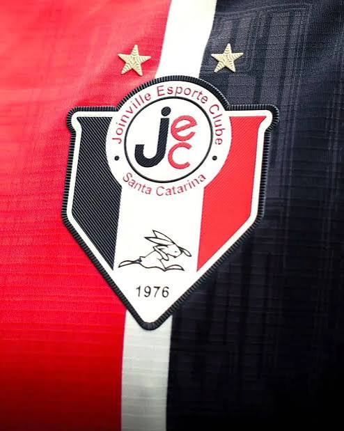

O Tricolor da Manchester Catarinense
Fundado em 29 de janeiro de 1976, a partir da fusão dos departamentos de futebol do América e do Caxias, o Joinville Esporte Clube (JEC) tem uma história repleta de superações e conquistas. Com sede na cidade de Joinville, Santa Catarina, o clube rapidamente se tornou uma força no cenário esportivo estadual e nacional.
Mandando seus jogos na Arena Joinville, o Coelho é reconhecido pela força da sua torcida e pela histórica sequência de oito títulos estaduais consecutivos.

Sala de Troféus
- Campeonato Brasileiro — Série B: Campeão em 2014.
- Campeonato Brasileiro — Série C: Campeão em 2011.
- Campeonato Catarinense: 12 títulos estaduais (incluindo o histórico Octacampeonato de 1978 a 1985).
- Copa Santa Catarina: Pentacampeão estadual (2009, 2011, 2012, 2013 e 2020).
- Recopa Catarinense: Campeão em 2021.